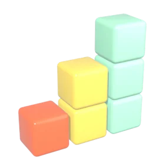
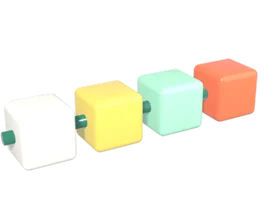
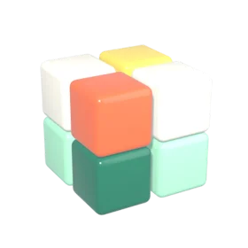

Data analyst in Tampa, Florida
Rishit Mathur
I turn messy data into numbers people can act on: dashboards, pipelines, forecasts and AI tools, each with the tests and sources behind the figure.
B.S. Business Analytics & IS, USF, May 2026M.S. candidate, Business & Enterprise IntegrationMicrosoft Power BI Data Analyst Associate
Selected work
Four projects, one per focus area. Each has a written case study, the code and, where it applies, a working demo. The big number is the one the case study reports, with its qualification kept.
Analyst first, builder second.
A data analyst in Tampa with hands-on SQL and Python, trained at USF's Muma College of Business.
In research, athletics operations and a business-analyst role I have redesigned data structures, merged 100K+ records and built Power BI dashboards that cut report turnaround by 22%.
- Education
- M.S. Business and Enterprise Integration, USF, expected May 2028
- B.S. Business Analytics and Information Systems, USF, May 2026 (Dean's List, Fall 2024)
- Certification
- Microsoft Power BI Data Analyst Associate
- Pursuing PMI-CAPM and AWS Cloud Practitioner (CLF-C02)
- Looking for
- Entry-level data and business analyst roles, US-wide and remote
Where the habits come from.
Sep 2025 to present
Research Assistant, USF REACH Lab
Managed end-to-end data workflows and built interactive dashboards that turn experimental findings into clear, actionable views for the team.
May 2025 to present
Student Assistant, Ticketing Operations, USF Athletics
Queried and analysed ticket sales, attendance and entry data to surface trends for event planning and resource allocation; maintained accurate transaction and customer records.
May to Aug 2025
Business Analyst, TraceRT
Gathered stakeholder reporting requirements, mapped data sources and ran a gap analysis on existing reporting; redesigned the underlying data structures and built Power BI dashboards that reduced report turnaround time by 22%.
Jan to Apr 2025
Sales Forecasting & Business Performance Analytics, course project
Built an end-to-end analytics solution over historical sales, customer behaviour and operations across regions; cleaned, merged and transformed 100K+ records in Python and R.
What I can do for a team.

Analysis and business intelligence
SQL, Python, pandas, Excel, Power BI with DAX and star schemas, Tableau. Reports with a benchmark and a recount behind every number.

Data pipelines and databases
dbt, DuckDB, PostgreSQL, SQLite, Oracle, SQL Server. ETL from public sources, data tests, lineage and monitoring for silent failures.
Retail pipeline in dbtBusiness FinderData reliability control plane

Forecasting, statistics and machine learning
Time series with honest backtests, regression and classification, A/B readouts, anomaly detection, optimisation with OR-Tools.
US retail sales forecastE-mail A/B test readoutFraud model monitoring

AI-enabled tools and software systems
Retrieval-augmented assistants that cite sources, FastAPI services, Docker Compose, and web front ends over real data.
All {{COUNT}} projects
Every project has a written case study. Search by title, technology or kind; the most common kinds are {{KINDS}}.
- {{CATALOG}}
No projects match.
Open to analyst roles. Let's talk.
rishit.mathur@yahoo.comEntry-level data and business analyst positions, US-wide and remote. The quickest route is e-mail or LinkedIn.